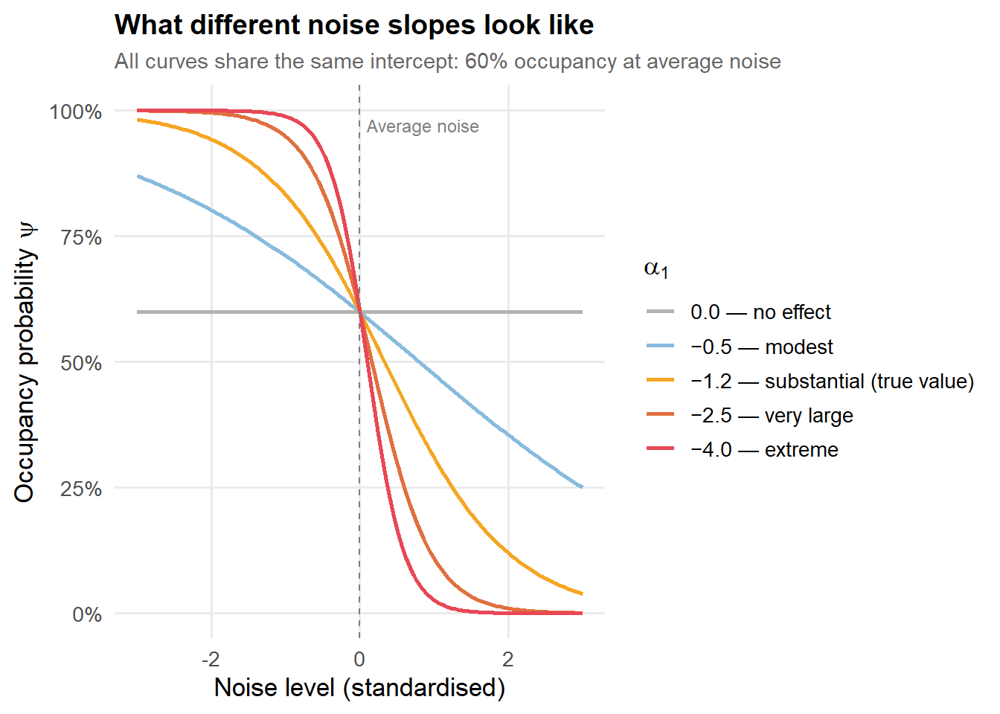

Are Noisy Neighbourhoods Less Occupied? An Introduction to Occupancy Modelling
Part 1 of 2: Occupancy Models
bayesian
occupancy
inference
Author
Stefan Schreiber
Published
May 31, 2026
Knock knock. Who’s there? Wendy. Wendy who? Wendy doorbell rings, let us know.
Setting the Scene
Imagine you work for a city planning office, and a question lands on your desk: do neighbourhoods near highways and other major noise sources have lower residential occupancy than neighbourhoods near parks?
It is a reasonable question. Chronic noise exposure is associated with stress, sleep disruption, and lower quality of life. If people have a choice, they would rather live near a quiet park than a roaring freeway. But do the data back this up?
To isolate the effect of noise, we set aside one important real-world complication: cost. Proximity to parks tends to inflate property values, so in reality you are never just comparing noise, you are also comparing rent. A fuller analysis would control for cost explicitly, for example by including a price covariate in the model. We set that aside here so the occupancy signal is not tangled up with the economic one.
The question becomes: all else being equal, do people choose to live away from noise?
To answer it, we need data on occupancy. Time to go knock on some doors.
Going Door to Door
The most direct approach is simple: visit a sample of homes across both types of neighbourhoods, ring the doorbell, and record whether anyone answers.
But here is the problem. When nobody answers, there are two very different explanations:
The unit is genuinely unoccupied. No one lives there.
The unit is occupied, but the resident is not home, or simply does not want to answer.
From a single doorbell ring, you cannot tell these apart. Both look identical in your data: no answer. Yet they mean completely different things. One reflects the true state of the world (vacancy); the other is a failure of your measurement process (a missed detection).
If you naively treat every non-answer as “unoccupied,” you will systematically underestimate occupancy. Worse, if missed detections happen more often in one type of neighbourhood (say, because people near highways work night shifts and are less often home during the day), you will also distort the comparison between neighbourhood types.
This is the core problem that occupancy modelling is designed to solve.
Detection vs. Occupancy: Untangling Two Processes
What we have stumbled into is a situation where the state we care about (is this unit occupied?) and the observation process (did we detect a resident?) are entangled — unless we design our study to separate them.
We can think of our data as arising from two distinct processes:
Process 1: Occupancy. Each housing unit \(i\) is either occupied (\(z_i = 1\)) or vacant (\(z_i = 0\)). The subscript \(i\) simply indexes which unit we are talking about — unit 1, unit 2, and so on up to our total of \(N\) units. The probability that a given unit is occupied is \(\psi_i\) (the Greek letter psi, pronounced “sigh”). This is what we want to estimate, and we expect it to vary by neighbourhood type.
Process 2: Detection. Given that a unit is occupied, what is the probability that a resident answers the door on a given visit? Call this \(p_{ij}\), where \(i\) identifies the unit and \(j\) identifies the visit, because detection probability can in principle vary both across sites and across occasions. It might depend on time of day, day of week, or other visit-level factors.
Our observation on each visit is therefore:
1 (someone answered): only possible if the unit is occupied and the resident was home and answered.
0 (no answer): possible either because the unit is vacant, or because it is occupied but the resident was not detected this time.
The occupancy model keeps these two processes separate and estimates both simultaneously.
The Fix: Visit Multiple Times
The solution is repeat visits. If you return to the same home on several different occasions, the pattern of answers and non-answers across visits becomes informative in a way that a single visit never can be.
Consider a unit you visit three times and record the sequence 0, 0, 1 (no answer, no answer, someone answered on the third visit). This sequence is only possible if the unit is occupied: a vacant unit could never produce a detection. The two earlier zeros must have been missed detections, not vacancies.
Now consider a unit with the sequence 0, 0, 0. This is ambiguous: it could be vacant, or it could be occupied with a consistently absent or unresponsive resident. But the probability of three missed detections in a row, for a genuinely occupied unit, is \((1 - p)^3\). If \(p = 0.6\), that probability is only \(0.064\), which is unlikely though possible.
By modelling many units simultaneously, we use the distribution of detection histories across all units to jointly estimate \(\psi\) and \(p\). Units that occasionally yield a detection anchor our estimate of how detectable occupied units are; units that never yield a detection are then re-evaluated in light of that estimate.
This is the essence of the occupancy model introduced by MacKenzie et al. (2002), originally developed for wildlife surveys (where the same problem arises when a species may be present at a site but not seen during a visit) and directly transferable to any setting where presence is imperfectly observed.
The Model
As with any statistical model, we start in the same place: a distributional assumption and a deterministic function. The distributional assumption describes the data-generating process, specifying what outcomes can occur and with what probability. The deterministic function models the expectation, expressing the probability that feeds into that assumption as a function of things we actually observe (our covariates).
What makes the occupancy model distinctive is that this two-part pattern appears twice, stacked on top of one another. There is one level for the true occupancy state and one for the observation process. Each level has its own distributional assumption and its own deterministic function.
Level 1: The Occupancy Process
We visit unit \(i\) on \(J\) occasions and collect its detection history\(\mathbf{y}_i = (y_{i1}, \ldots, y_{iJ})\), where each \(y_{ij}\) is 1 if someone answered on visit \(j\) and 0 otherwise.
The quantity we care about but never observe directly is the true occupancy state \(z_i\), the same binary state introduced earlier as the output of Process 1: is this unit occupied (1) or vacant (0)? We model it as a Bernoulli random variable — a single coin flip with a site-specific probability of landing heads:
\[
z_i \sim \text{Bernoulli}(\psi_i)
\]
A Bernoulli distribution is the simplest possible probability model: it produces a 1 with probability \(\psi_i\) and a 0 with probability \(1 - \psi_i\).
We do not observe \(\psi_i\) directly either, but we model it as a function of site-level covariates — things like noise level and distance to the nearest park:
The \(\text{logit}^{-1}\) function (also written \(\text{logistic}\)) maps any real number to the interval \((0, 1)\), ensuring that \(\psi_i\) is always a valid probability. This is the same link function used in logistic regression; the occupancy part of the model is logistic regression for a latent binary outcome.
Occupancy covariates are properties of the site and are fixed across all visits. Noise level, distance to a park, and neighbourhood type are all site-level: they do not change between your Monday visit and your Friday visit.
Level 2: The Observation Process
What we do observe is \(y_{ij}\): whether someone answered the door on visit \(j\) to unit \(i\). The subscripts keep track of two dimensions at once: \(i\) indexes the site (which housing unit) and \(j\) indexes the visit (which trip to that unit). So \(y_{32}\) means “the outcome on the second visit to the third unit.” This also follows a Bernoulli distribution, but with one crucial modification:
The notation \(y_{ij} \mid z_i\) is read “the observation at site \(i\), visit \(j\), given the occupancy state \(z_i\).” The vertical bar means we are conditioning on — taking as given — the true state of the unit.
\(p_{ij}\) is the detection probability: the chance that a resident answers the door on visit \(j\) to unit \(i\), given that the unit is occupied. The double subscript is there because detection probability can in principle vary both across sites (some households are just harder to reach) and across visits (a Saturday afternoon visit is more likely to find someone home than a Tuesday morning one).
The \(z_i \cdot p_{ij}\) term enforces the constraint that a detection is only possible if the unit is occupied. If \(z_i = 0\) (vacant), the product is zero and no detection can occur regardless of \(p_{ij}\). If \(z_i = 1\) (occupied), the probability of a detection is simply \(p_{ij}\).
The detection probability is modelled as a logistic function of visit-level covariates:
Detection covariates can vary by both site and visit. Whether it was a weekday, the time the surveyor arrived, and the weather are all visit-level properties that can shift the probability of getting an answer without saying anything about whether anyone lives there.
This is the key asymmetry in the model: occupancy covariates are site-level; detection covariates can be visit-level. Keeping them in the right equation is what allows the model to separate the two processes.
The Marginal Likelihood
Because \(z_i\) is never observed, it must be marginalised out of the likelihood. Marginalising means we cannot condition on \(z_i\) the way we would with an observed variable, so instead we consider both possibilities, occupied (\(z_i = 1\)) and vacant (\(z_i = 0\)), and weight each by its probability. The result is an expression that depends only on things we can actually observe and estimate.
For a unit where at least one detection occurred (\(\sum_j y_{ij} > 0\)), the ambiguity disappears: we know with certainty that \(z_i = 1\), because a vacant unit can never produce a detection. For a unit with all zeros, both states remain possible.
The marginal likelihood contribution of unit \(i\) is:
\[
\mathcal{L}_i = \underbrace{\psi_i \prod_j p_{ij}^{y_{ij}}(1 - p_{ij})^{1 - y_{ij}}}_{\text{occupied and produced this history}} \;+\; \underbrace{(1 - \psi_i)\,\mathbf{1}\!\left[\sum_j y_{ij} = 0\right]}_{\text{vacant and produced all zeros}}
\]
Both terms are regular probabilities on the \([0, 1]\) scale — not log-probabilities. We can add them directly because they represent two mutually exclusive scenarios: a unit cannot be both occupied and vacant at the same time. Adding the probabilities of mutually exclusive events gives the total probability of what we observed, which is exactly what a likelihood is.
The indicator \(\mathbf{1}[\sum_j y_{ij} = 0]\) is a simple on/off switch. It equals 1 when every visit to site \(i\) recorded a zero — no detection across all \(J\) visits — and equals 0 the moment any single \(y_{ij} = 1\) occurs. In that second case the vacant term becomes \((1 - \psi_i) \times 0 = 0\) and vanishes from the sum entirely, because a vacant unit producing a detection is a logical impossibility. To put it plainly:
Any detection occurred (\(\sum_j y_{ij} > 0\)): switch = 0, vacant term = 0, only the occupied term contributes.
All visits were zero (\(\sum_j y_{ij} = 0\)): switch = 1, vacant term = \((1 - \psi_i)\), both terms contribute.
Only after forming \(\mathcal{L}_i\) do we take the log, giving \(\log \mathcal{L}_i\) for each site. The full log-likelihood is then the sum \(\sum_i \log \mathcal{L}_i\). We work with the log because multiplying many small probabilities together (one per site) quickly produces numbers too small for computers to represent accurately; summing their logs avoids this.
Important: you cannot take the log first and then add. The two terms inside \(\mathcal{L}_i\) are added on the probability scale, and \(\log(A + B) \neq \log A + \log B\). This is why the Stan implementation uses log_sum_exp(a, b), which computes \(\log(e^a + e^b)\), the mathematically correct way to sum two probabilities when you are already working on the log scale for numerical stability.
A worked example by hand
Let us make this concrete. Suppose we have a single unit visited \(J = 3\) times, with detection history 0, 1, 0 (no answer, answered, no answer). Assume \(\psi = 0.70\) and \(p = 0.60\), constant across all visits for simplicity.
Step 1: The occupied term.
The unit was visited three times. On visit 2 someone answered (\(y = 1\)); on visits 1 and 3 no one answered (\(y = 0\)). Given the unit is occupied, the probability of this specific history is:
\[
\underbrace{(1 - 0.60)}_{\text{miss on visit 1}} \times \underbrace{0.60}_{\text{hit on visit 2}} \times \underbrace{(1 - 0.60)}_{\text{miss on visit 3}} = 0.40 \times 0.60 \times 0.40 = 0.096
\]
Weighting by the probability the unit is occupied:
The history contains a detection (\(y_{i2} = 1\)), so the indicator \(\mathbf{1}[\sum_j y_{ij} = 0]\) equals 0. The vacant term is therefore exactly zero — a vacant unit could not have produced that detection.
Notice that even with three non-detections, the marginal likelihood is dominated by the vacant term (0.30 vs 0.0448). The model is telling us: given \(p = 0.60\), three consecutive misses are much more likely to reflect a vacant unit than a persistently undetected occupied one. But the occupied possibility is not ruled out; it just gets less weight.
Why This is Called a Hierarchical Model
The occupancy model is often described as a hierarchical model, and the label is accurate, but it means something specific here that is worth being precise about, because it differs from the hierarchical models most people encounter first.
In the more familiar sense, hierarchical models refer to structures where observations are grouped (students within schools, measurements within patients) and each group is given its own parameter drawn from a common distribution. The hierarchy is across units of the same type, and the group-level parameters capture unexplained between-group variation. This is the world of mixed effects models, partial pooling, and packages like lme4.
The occupancy model is hierarchical in a different sense: the hierarchy is across conceptually distinct processes stacked on top of one another. The latent occupancy state \(z_i\) lives at one level; the observed detection data \(y_{ij}\) live at a second level, conditional on \(z_i\). The two levels represent different parts of reality (the world, and your measurement of it), not different strata within the same grouping structure.
Using the terminology from Royle and Dorazio (2008), this is a state-space model: the system has a hidden state (occupancy) and a noisy observation process (detection). The \(z_i\) values are not random effects in the mixed-model sense. They are unknown binary facts about the world: unit \(i\) is either occupied or it is not, and we are trying to learn that from the data.
A useful distinction: in a mixed model, you typically care only about the variance of the random effect distribution, not the individual group estimates themselves. In an occupancy model, you often care a great deal about the individual \(z_i\) values. Which units are occupied? Where is occupancy clustered? The latent states are themselves targets of inference, not nuisance parameters to be integrated away.
The two approaches are not mutually exclusive. You can embed an occupancy model inside a multilevel structure — for example, if sites are nested within neighbourhoods and you want neighbourhood-level random effects on \(\psi\). In that case both kinds of hierarchy operate simultaneously.
Identifiability: Can the Data Tell \(\psi\) and \(p\) Apart?
Before fitting anything, it is worth asking a harder question: can the data in principle distinguish between low occupancy and low detection? This is the identifiability problem.
The fundamental tension. A low observed detection rate can arise because occupancy is genuinely low (most units are vacant) or because detection is poor (most occupied units are being missed). These two explanations make different predictions about what happens if you add more visits: if \(\psi\) is truly low, more visits do not help much because the units are empty; if \(p\) is truly low, more visits progressively reveal more occupied units. This predictive difference is what the model exploits, but only if you have enough data to exploit it.
What identification requires:
Multiple visits (\(J \geq 2\), with \(J \geq 3\) strongly preferred). A single visit conflates \(\psi\) and \(p\) completely.
Sufficient sites. With very few sites, the joint likelihood surface becomes flat along a ridge that trades off \(\psi\) against \(p\).
Variation in covariates. If you have covariates that affect \(p\) but not \(\psi\) (for example, time of day affects whether someone answers but does not change whether they live there), this gives the model a lever to separate the two processes. This is the covariate exclusion restriction, and it is the single most powerful design choice you can make.
Boundary problems. When true \(\psi\) is near 0 or 1, or when true \(p\) is near 0 or 1, the likelihood surface flattens near the boundary and estimates become unstable. In a Bayesian framework this shows up as posteriors that are sensitive to the prior in those regions. The practical implication: if almost all your sites either always produce detections or never do, more surveys cannot fully fix the problem.
We will illustrate this concretely with our simulation data below. Once the data exist, we can plot the joint likelihood surface and see exactly how well-separated the peak is. See the figure in the worked example section.
A Bayesian Treatment
Frequentist estimation via maximum likelihood is well-established and accessible through the unmarked package in R (Fiske and Chandler 2011), which is a sensible starting point for exploratory work.
We take a Bayesian approach here for four reasons.
Posterior distributions over \(z_i\). The latent occupancy states are treated as unknown parameters with full posterior distributions. After fitting the model, you can directly ask: given the data, what is the posterior probability that unit \(i\) is occupied? This is a natural and interpretable quantity.
Uncertainty propagation. When \(\psi\) and \(p\) are uncertain, as they always are with finite data, a Bayesian model propagates that uncertainty coherently through to any downstream quantity: total occupied units in a neighbourhood, the difference in occupancy between noisy and quiet areas, and so on.
Informative priors. If previous surveys suggest that residents answer the door 50 to 70 per cent of the time, you can encode that rather than leaving the model to work it out from scratch. This is particularly valuable when the number of visits \(J\) is small.
Extensibility. Models specified in Stan scale naturally to more complex structures: varying detection probabilities across surveyors, spatial random effects on \(\psi\), multi-season dynamics. Each extension is a local edit to the generative model.
Key Assumptions
Closure. The occupancy state \(z_i\) must not change during the survey period. Repeat visits should happen within a window short enough that residential turnover is negligible. If a tenant moves out between your first and third visit, the model’s assumption that \(z_i\) is fixed is violated.
Conditional independence. Detections across different visits to the same site are assumed independent, conditional on \(z_i\) and \(p\). If a resident who ignored you on Monday is systematically likely to ignore you on Thursday, perhaps because they are travelling, this assumption is violated and \(p\) will be underestimated.
No false positives. If \(y_{ij} = 1\), the unit is genuinely occupied. The model has no mechanism for accidental detections (for instance, mistaking a house-sitter for the primary resident).
Correct model specification. The covariates in the linear predictors are the relevant ones, and the two-level Bernoulli structure genuinely describes how the data were generated.
Worked Example: Simulating and Fitting the Model
The best way to build intuition for any model is to simulate data from known parameters, fit the model, and check whether it recovers those parameters. If it cannot recover the truth on clean simulated data, it has no business being trusted on real data.
Simulating the Data
We simulate \(N = 120\) housing units, each visited \(J = 4\) times. Half the units are in high-noise neighbourhoods near highways; half are in low-noise neighbourhoods near parks. The true parameters are:
Occupancy in low-noise areas: \(\psi_\text{quiet} = 0.85\)
Occupancy in high-noise areas: \(\psi_\text{noisy} = 0.55\)
Detection probability: \(p = 0.60\), constant across all visits
On the logit scale, with a standardised continuous noise covariate (so that a one-unit increase represents a meaningful shift in noise level), this corresponds to \(\alpha_0 \approx 0.40\) and \(\alpha_1 \approx -1.20\).
R code: simulate detection histories
set.seed(2024)N <-120J <-4# Quiet sites: noise ~ N(-1, 0.5); noisy sites: noise ~ N(1, 0.5)neighbourhood <-rep(c("quiet", "noisy"), each = N /2)noise_raw <-c(rnorm(N /2, mean =-1, sd =0.5),rnorm(N /2, mean =1, sd =0.5))noise <-as.numeric(scale(noise_raw))alpha0_true <-0.40alpha1_true <--1.20beta0_true <-0.40# logit(0.60) ≈ 0.405psi_true <-plogis(alpha0_true + alpha1_true * noise)z_true <-rbinom(N, 1, psi_true)y <-matrix(rbinom(N * J, size =1, prob = z_true *plogis(beta0_true)),nrow = N, ncol = J)tibble(Statistic =c("Sites occupied (truth)","Sites with at least one detection","Naive detection rate (answers / total visits)" ),Value =c(sprintf("%d / %d", sum(z_true), N),sprintf("%d / %d", sum(rowSums(y) >0), N),sprintf("%d / %d", sum(y), N * J) ),Percentage =c(sprintf("%.0f%%", 100*mean(z_true)),sprintf("%.0f%%", 100*mean(rowSums(y) >0)),sprintf("%.0f%%", 100*mean(y)) )) |> knitr::kable(caption ="Data summary before model fitting",col.names =c("Statistic", "Value", "%"),align =c("l", "c", "c") )
Data summary before model fitting
Statistic
Value
%
Sites occupied (truth)
71 / 120
59%
Sites with at least one detection
66 / 120
55%
Naive detection rate (answers / total visits)
153 / 480
32%
The naive detection rate across all visits is considerably lower than the true occupancy rate. This gap is exactly the underestimation problem we set out to solve.
Identifiability in Practice
Before fitting the model, it is worth returning to the identifiability question raised earlier. Now that we have data, we can compute the joint log-likelihood surface over all combinations of \(\psi\) and \(p\) and see concretely how well the two parameters are separated.
Each cell in the heatmap below asks: if the true occupancy probability were \(\psi\) and the true detection probability were \(p\), how well would that combination explain our 120-site dataset? The brightest region is the best-fitting combination; colours fall away as we move to less plausible combinations. The white cross marks the true values used to generate the data.
The contour lines are drawn at −1, −2, −5, −10, and −20 on the relative log-likelihood scale. A value of −2 means the likelihood at that point is \(e^{-2} \approx 0.14\) times the likelihood at the peak — the data are about seven times less probable under that parameter combination than under the best one. The −2 contour is a useful rough boundary: anything inside it is well-supported by the data, anything outside it is not.
Figure 1: Joint log-likelihood surface for ψ and p computed from the simulation dataset (N = 120 sites, J = 4 visits). Each cell shows how well that combination of ψ and p explains the observed detection histories, relative to the best-fitting combination (set to zero). The white cross marks the true values used to simulate the data. The well-defined peak confirms that ψ and p are separately identifiable — there is one clear best answer, not a ridge of equally plausible combinations.
If you have ever read a topographic map, the contour lines here work exactly the same way. On a topo map, each line connects all points at the same elevation; a tight cluster of rings indicates a sharp summit, while widely spaced lines indicate a gentle slope. Here, each white contour line connects all combinations of \(\psi\) and \(p\) that fit the data equally well at that likelihood level, and the colour fills in the full surface between them. The bright spot at the centre is the summit: the single combination that best explains the data. The contour rings around it show how steeply the fit deteriorates as you move away.
The peak is tight and well-centred near the true values. This matters because a sharp peak means there is essentially one combination of \(\psi\) and \(p\) that explains the data well — moving away from it in any direction, including sliding along the \(\psi\) axis alone or the \(p\) axis alone, makes the fit noticeably worse. The data are pinning down both parameters separately.
A diagonal ridge running from the bottom-right to the top-left would be the danger sign: it would mean that low \(\psi\) paired with high \(p\) fits about as well as high \(\psi\) paired with low \(p\), and the data cannot tell the two stories apart, like a mountain range with no clear summit, just an endless spine. The tight, roughly circular peak here confirms that our four visits per site are sufficient to identify both parameters separately.
The Stan Model
We fit the model in Stan via CmdStanR. Before looking at the code, it helps to be clear about exactly what we are asking the model to do.
We have 120 housing units, each visited 4 times. For each unit we know its noise level, a single continuous number standardised so that 0 is average across all sites, negative values are quieter than average, and positive values are louder. Standardising is a routine preprocessing step: it puts the covariate on a common scale so that a one-unit change always means the same thing (moving one standard deviation away from the average noise level), regardless of the original units of measurement (decibels, traffic counts, or anything else). For each visit to each unit, we recorded a 1 (someone answered) or a 0 (no answer).
The model has three unknowns to estimate:
\(\alpha_0\): the baseline occupancy intercept. This is the log-odds of occupancy at a site with exactly average noise (noise = 0). Converting to a probability via the logistic function gives us our baseline occupancy rate.
\(\alpha_1\): the noise slope. This is the change in log-odds of occupancy for a one-unit increase in standardised noise, that is, for a one standard deviation increase in noise level. We expect this to be negative: higher noise, lower occupancy.
\(\beta_0\): the detection intercept. Because we are not modelling detection as a function of any visit-level covariate here, detection probability is a single constant across all visits and all sites. Converting \(\beta_0\) gives us \(p\): the probability that a resident answers the door on any given visit, assuming the unit is occupied.
Everything else follows from the two-level structure described earlier. At the occupancy level, each site’s occupancy probability \(\psi_i\) is computed from \(\alpha_0\) and \(\alpha_1\) via the logistic function. At the detection level, the observed detection histories are compared to what the model predicts under that \(\psi_i\) and the shared detection probability \(p\), with the marginalisation over the unknown \(z_i\) handled exactly as in the likelihood expression above.
On the priors. The priors are normal(0, 1.5) for \(\alpha_0\) and \(\beta_0\), and normal(0, 1.0) for \(\alpha_1\). To understand what these mean, it helps to convert a few values back to the probability scale.
For the intercepts, a normal(0, 1.5) prior on the logit scale covers a wide range: logit\(^{-1}(-3) \approx 5\%\) and logit\(^{-1}(3) \approx 95\%\), so values three standard deviations from zero, which this prior considers quite unlikely, correspond to occupancy near the floor or ceiling. This is honest about our prior uncertainty: we genuinely do not know whether baseline occupancy is 30% or 80% before seeing the data, and this prior reflects that without being completely uninformative.
For the noise slope \(\alpha_1\), it helps to think about what different slope values imply in practice. Because the covariate is standardised, \(\alpha_1\) tells us how occupancy changes when noise increases by one standard deviation. We fix the intercept at \(\alpha_0 = 0.40\) (60% occupancy at average noise) and vary only the slope.
The figure below shows five curves, one per slope value. They all pass through the same point at noise = 0 — 60% occupancy — because the intercept is identical. What differs is how steeply occupancy falls as noise increases to the right, and how steeply it rises as noise decreases to the left.
Show code
slopes <-c(0.0, -0.5, -1.2, -2.5, -4.0)slope_labels <-c("0.0 — no effect","−0.5 — modest","−1.2 — substantial (true value)","−2.5 — very large","−4.0 — extreme")alpha0_fixed <-0.40noise_range <-seq(-3, 3, length.out =200)slope_df <-map2(slopes, slope_labels, function(a1, lab) {tibble(noise = noise_range,psi =plogis(alpha0_fixed + a1 * noise_range),slope = lab )}) |>list_rbind() |>mutate(slope =factor(slope, levels = slope_labels))pal <-c("0.0 — no effect"="grey70","−0.5 — modest"="#88BBDD","−1.2 — substantial (true value)"= col_mid,"−2.5 — very large"="#E07040","−4.0 — extreme"= col_noisy)ggplot(slope_df, aes(x = noise, y = psi, colour = slope)) +geom_line(linewidth =0.9) +geom_vline(xintercept =0, linetype ="dashed", colour ="grey50", linewidth =0.5) +annotate("text", x =0.1, y =0.97, label ="Average noise",colour ="grey50", size =3.2, hjust =0) +scale_colour_manual(values = pal, name =expression(alpha[1])) +scale_y_continuous(limits =c(0, 1), labels = scales::percent) +labs(title ="What different noise slopes look like",subtitle ="All curves share the same intercept: 60% occupancy at average noise",x ="Noise level (standardised)",y =expression(paste("Occupancy probability ", psi)) ) +theme(legend.position ="right")

Figure 2: Occupancy probability as a function of standardised noise level under five different slope values, all with the same intercept (α₀ = 0.40, corresponding to 60% occupancy at average noise). The vertical dashed line marks average noise (0). The slope α₁ = −1.2 is the true value used in the simulation; the others illustrate the range from no effect to an implausibly extreme deterrent.
For reference, the same information in numbers:
\(\alpha_1\)
At average noise
One SD above average
Effect
0.0
60%
60%
None — both columns identical because slope is zero
−0.5
60%
48%
Modest
−1.2
60%
32%
Substantial — our true simulated value
−2.5
60%
13%
Very large
−4.0
60%
2%
Extreme
A slope of −4.0 would mean that moving one standard deviation noisier nearly empties a neighbourhood entirely. That is a claim requiring extraordinary evidence. The normal(0, 1.0) prior assigns this value vanishingly small probability, as it sits four standard deviations from zero, while leaving slopes in the −0.5 to −2.5 range, which correspond to meaningful but not extreme effects, well within the prior’s support. The data can push the estimate wherever the evidence points; the prior simply prevents the sampler from seriously entertaining scenarios that would require an almost total noise-driven exodus.
The Stan code below implements the two-level model exactly as described. If you are not familiar with Stan, the three blocks map directly onto the model structure: data declares what we pass in, parameters names the three unknowns the sampler will estimate, model contains the priors and the marginalised likelihood loop, and generated quantities computes derived quantities — site-level \(\psi_i\), detection probability \(p\), and the posterior probability that each all-zero site is genuinely occupied.
Stan code: two-level occupancy model
stan_code <-"data { int<lower=1> N; int<lower=1> J; array[N, J] int<lower=0, upper=1> y; vector[N] noise;}parameters { real alpha0; real alpha1; real beta0;}model { // Weakly informative priors on logit scale alpha0 ~ normal(0, 1.5); alpha1 ~ normal(0, 1.0); beta0 ~ normal(0, 1.5); for (i in 1:N) { real psi_i = inv_logit(alpha0 + alpha1 * noise[i]); real p_i = inv_logit(beta0); real log_lik_occupied = 0; for (j in 1:J) log_lik_occupied += bernoulli_lpmf(y[i,j] | p_i); int any_detected = 0; for (j in 1:J) if (y[i,j] == 1) any_detected = 1; if (any_detected == 1) { target += log(psi_i) + log_lik_occupied; } else { target += log_sum_exp( log(psi_i) + log_lik_occupied, log1m(psi_i) ); } }}generated quantities { vector[N] prob_occupied; vector[N] psi; real p; p = inv_logit(beta0); for (i in 1:N) { psi[i] = inv_logit(alpha0 + alpha1 * noise[i]); int any_detected = 0; for (j in 1:J) if (y[i,j] == 1) any_detected = 1; if (any_detected == 1) { prob_occupied[i] = 1.0; } else { real log_occ = log(psi[i]) + J * log1m(p); real log_vac = log1m(psi[i]); prob_occupied[i] = exp(log_occ - log_sum_exp(log_occ, log_vac)); } }}"stan_file <-file.path(tempdir(), "occupancy_model.stan")writeLines(stan_code, stan_file)mod <-cmdstan_model(stan_file)stan_data <-list(N = N, J = J, y = y, noise = noise)fit <- mod$sample(data = stan_data,seed =2024,chains =4,parallel_chains =4,iter_warmup =1000,iter_sampling =2000,refresh =0)
R code: posterior summary table
fit$summary(c("alpha0", "alpha1", "beta0", "p"))
The table above shows the posterior summary for each parameter. The mean column is the posterior mean — our best single-number estimate. The q5 and q95 columns are the 5th and 95th percentiles, forming a 90% credible interval. rhat is a convergence diagnostic: values close to 1.00 indicate the four independent sampling chains reached the same answer, which is what we want to see.
Parameter Recovery
The first check after any Bayesian fit is whether the model recovers the true parameters. But before looking at the figure, it is worth being clear about what these parameters actually represent — because the model works on the logit scale, and the numbers will look unfamiliar at first.
This means \(\alpha_0\) and \(\alpha_1\) are not occupancy probabilities themselves. They are coefficients on the logit scale — a transformed scale where 0 corresponds to a probability of 0.50, positive values correspond to probabilities above 0.50, and negative values correspond to probabilities below 0.50. To convert back to a probability, you apply the logistic function: \(\text{logit}^{-1}(x) = e^x / (1 + e^x)\).
So what do the true values mean in plain terms?
\(\alpha_0 = 0.40\): the baseline occupancy intercept. Converting: \(\text{logit}^{-1}(0.40) \approx 0.60\), meaning a site with average noise has roughly 60% occupancy probability.
\(\alpha_1 = -1.20\): the noise slope. Negative because higher noise is associated with lower occupancy. A one-unit increase in standardised noise reduces the log-odds of occupancy by 1.20 — a substantial effect.
\(\beta_0 = 0.40\): the detection intercept. Converting: \(\text{logit}^{-1}(0.40) \approx 0.60\), matching our true detection probability of 60%.
The reason \(\alpha_1\) is negative is simply that noisy neighbourhoods are less occupied, which is exactly the effect we built into the simulation. If noise had no effect, \(\alpha_1\) would be near zero. If noise made neighbourhoods more occupied, it would be positive.
The figure below shows the posterior distribution for each parameter — the model’s full range of uncertainty after seeing the data — with the true simulation values marked. A narrow distribution means the data pin down the parameter precisely; a wide one means more uncertainty remains.
Figure 3: Posterior distributions for the three model parameters, all on the logit scale. Dashed lines mark the true values used to simulate the data. α₀ and β₀ near 0.40 both correspond to probabilities of roughly 60% on the natural scale. α₁ near −1.20 captures the negative effect of noise on occupancy — the further left (more negative), the stronger the deterrent effect of noise.
The posteriors are centred close to the true values in all three cases. The noise slope \(\alpha_1\) is the most precisely recovered — the data contain a strong signal about the direction and magnitude of the noise effect. The intercepts \(\alpha_0\) and \(\beta_0\) are slightly wider, which is normal: intercepts absorb more residual uncertainty than slope parameters when covariates are well-spread.
Occupancy Probability vs. Noise
The quantity we care most about is how occupancy probability varies with noise level. The figure below shows the posterior mean occupancy curve and its 90% credible interval — the range within which the true value falls with 90% posterior probability — across the full range of observed noise values. Rug marks along the top edge show individual quiet sites (blue); rug marks along the bottom edge show individual noisy sites (red).
Figure 4: Posterior occupancy probability as a function of standardised noise level. The ribbon is the 90% pointwise credible interval. Rug marks at the top and bottom indicate the noise values of individual quiet (blue) and noisy (red) sites. The interval widens at the edges where fewer sites exist to anchor the estimate.
The negative slope is clearly recovered. The interval is wider at extreme noise values — the edges of the data — where fewer sites exist to anchor the estimate.
What Happens If You Ignore Detection Probability?
The motivating claim of this post is that ignoring imperfect detection leads to biased inference. Let us make that concrete.
The naive approach is simply to take the proportion of visits where someone answered as our occupancy estimate. This treats every non-answer as evidence of vacancy, which we know is wrong.
Figure 5: Naive occupancy estimate (raw proportion of visits with a detection, treated as the occupancy rate) versus the model-based posterior estimate, shown separately for quiet and noisy sites. The naive estimator consistently underestimates occupancy in both neighbourhood types. Because it underestimates both by similar amounts here, the relative difference is approximately preserved — but this would not hold if detection probability varied systematically between neighbourhoods.
The naive estimator consistently underestimates occupancy in both neighbourhood types. Here, because detection probability is the same in both neighbourhoods, the relative difference between them is roughly preserved. But consider what would happen if people near highways were more often absent during daytime survey hours: \(p\) would be lower in noisy neighbourhoods, the naive estimator would underestimate them even more, and the apparent gap between neighbourhood types would be overstated. The occupancy model protects against exactly this kind of differential detection bias.
What’s Next
We now have the full single-season occupancy model: the motivation, the two-level structure and its marginal likelihood, a worked numerical example by hand, the identifiability surface showing that \(\psi\) and \(p\) are separately recoverable, a Bayesian implementation in Stan with carefully considered priors, and a final comparison showing what goes wrong if you ignore imperfect detection entirely.
In Part 2, we ask a different question: not whether a unit is occupied, but how many people are typically home. This turns the latent binary state into a latent count, and calls for an N-mixture model. The detection problem reappears in the same form, but the stakes are higher: with counts, misestimating detection probability does not just shift your estimates up or down — it distorts the entire shape of the abundance distribution.
References
Fiske, Ian, and Richard Chandler. 2011. “Unmarked: An R Package for Fitting Hierarchical Models of Wildlife Occurrence and Abundance.”Journal of Statistical Software 43 (10): 1–23. https://doi.org/10.18637/jss.v043.i10.
MacKenzie, Darryl I., James D. Nichols, Gideon B. Lachman, Sam Droege, J. Andrew Royle, and Catherine A. Langtimm. 2002. “Estimating Site Occupancy Rates When Detection Probabilities Are Less Than One.”Ecology 83 (8): 2248–55. https://doi.org/10.1890/0012-9658(2002)083[2248:ESORWD]2.0.CO;2.
Royle, J. Andrew, and Robert M. Dorazio. 2008. Hierarchical Models and Inference in Ecology. Academic Press.
Citation
BibTeX citation:
@online{schreiber2026,
author = {Schreiber, Stefan},
title = {Are {Noisy} {Neighbourhoods} {Less} {Occupied?} {An}
{Introduction} to {Occupancy} {Modelling}},
date = {2026-05-31},
url = {https://envirostats.ca/posts/2026-05-31-occupancy-modelling/},
langid = {en}
}